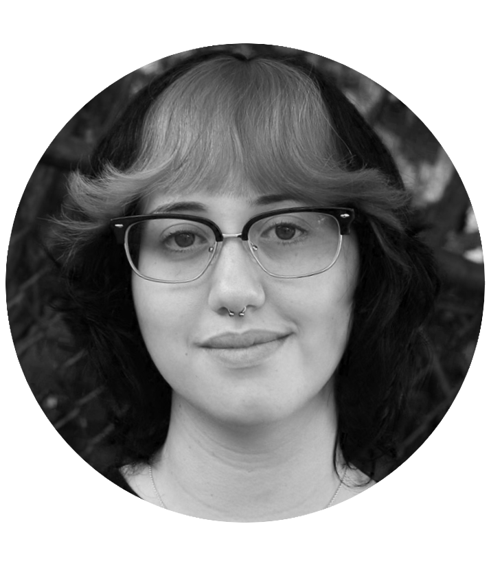

Artist's Statement
Elisa Gislao is a graphic designer and artist who is currently in their senior year at Rutgers with a plan to graduate with a BFA in Design in 2025. Her design work is clean and has a focus on multimedia design. Her photography focuses on the human body as well as nature and how the two play into each other. Outside of school, Elisa also has a talent for creating life-like watercolor illustrations focusing on avian life.
